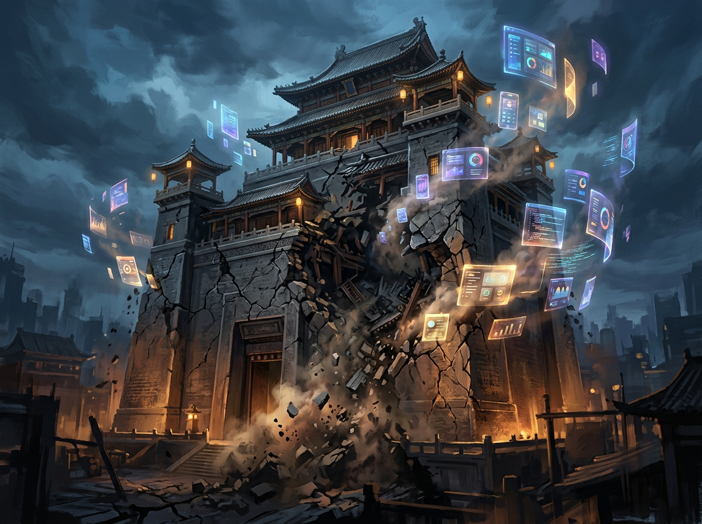

商 业 复 盘 · 酒 后 真 言
无论是你想做事，还是在做事
希望对你能有启发
某天和一个朋友喝酒，聊起往事，谈到时代变迁带来的市场变化。他早前在苏宁干过，对苏宁现状很是唏嘘。为什么？因为在同国美打赢线下市场时，他是有一手牌面的，无论是资本、市场口碑、团队等等，大把的牌。
资本方面，受到机构青睐，融资运作等那是自然没得话说，2010年前后的操作可知。
市场方面，用户心智对于大家电品质保障相比之前更信赖苏宁。他要建总部，南京政府给地给资源，最后大家都看到了，地铁都通到大门口了。2015年前后那是真辉煌。早上仙鹤门到总部的摆渡车呼啦啦的来回跑，场面可壮观了。总部播放苏宁之歌。
技术团队，也从0几年的几十到10年几百号，再到后面几千几万号规模。可谓声势浩大。
但藏在这个大之下的全是危机，这个危机在于方向，在于导向。

买了几十年空调，还讲空调。互联网都要高潮了，你还在讲线下故事。在那么大的会场，司庆活动即是盛典狂欢也是业务传承。装一台空调可以用几年，全南京都装满了，你在南京还能卖给谁？
这是文化的错误，堪比五次反围剿失败。好比你把苏联经验拿过来，那是不行的。市场的变化带来环境的变化，好比你在游戏中已经换地图了。
线下的门店还走销售提成呢，贡献大多拿。技术团队考核为啥吃大锅饭？干好干差没有多少区别，有区别也不大，不够吸引人。当然他的整体策略有，对标市场行情，整体上浮，但那是为了应对市场，不然真不好招聘。因为大锅饭，校招与社招很多好苗子走了。
朋友喝了一杯酒，噔，甩桌子上，他接着说：
某当时负责一个项目，一个外包的项目，公司想接过来走自研，一方面省成本，二来响应快。但是接这个项目有难度，一方面是需求的事，一方面是人的事。你懂的，你想接，对面不配合的。在我前面几个都没人搞定，到我了，各方面策略，实地攻坚，交接+过渡半年时间搞定。按后续量估算，年节省研发费用1000w。
但是收益呢？嘿嘿，就一优秀员工，再加高潜，没了。经济收益差别不大，那是耍流氓。
技术的强项，就是可以单拉一个小团队孵化，比如早期淘宝。
他讲在2011年他给公司建议搞基金，也就是类似余额宝产品。当时苏宁有自己的易付宝，天然有土壤可以做这个事，借助市场的风拓展支付产品的用户量，不香吗？可惜提了没回应。
一年半后，余额宝出世，大火！
如果你看到了，别人做成了，你也开心，但也遗憾。你说这种环境，有想法的员工是什么感觉。
2015年之后，从产品体验上看，你觉得他似乎入门了，知道互联网怎么玩了。可是那是表面，且尾大不掉。云产品一塌糊涂，电商类也只是学模学样。
老板底子里还是传统投资那一套。200个亿投恒大，为啥不内部孵化？技术团队被门店牵着走。线上线下赛马就是喽，非要搞互相羁绊，做线上要考虑线下，线下要考虑线上，你不是在搞熵增吗？
当时一个主流方式就是营销补贴，低价走量。要做用户体量、做商品体量、做库存周转等等。本质是要货到用户要快、要短。
线上逻辑受线下影响，在寻源等逻辑依然包含传统调拨模式。其实没有必要。通过算法预测，搭配线上线下营销做到最短路径的物流动作与端上销售即可。对吧，某个地方货多，那就搞活动消化掉，减少物流成本的同时，在价格上产生优势。某个地区缺货就在下一个轮次增加采购，打通前线销售到工厂的采购链路。通过各个轮次的销售数据反馈，迭代销售到生产的供应模型，这将是线下线上长期累积的核心能力。
可是没走这条路。网传都2020年了，线下还用十多年前的销售管理办法，虽有迭代，没有质变。
简而言之，被新的模式给降维打击了。你在用刀枪，别人已经加特林了。你的出刀速度赶不上对方出弹速度。
朋友又喝了杯酒，滋了一口气，讲道：
这几件事你看透了逻辑，就知道结局的走向了。苏宁体量大，你看历史，好比一个国家，瞎折腾一下死不了，但最后的结局已经定了。为什么讲这个，因为经历过，期望过，哪怕离开之后也希望它能变好。
朋友又来了一杯，啪~酒杯落桌。
时代从来不会因为你是谁而区别对待你，而是要看你做什么选择，又做了什么事情。正如有个桥段讲的：来工地就要带安全帽，板砖可不认识哪个是领导。
故事讲完了，心也舒畅了，谢谢你这顿酒。
我说我也谢谢你讲的故事，受益匪浅。
关注我，讲故事给你听！
待到时机成熟时，漫山遍野的粉丝福利！
我有酒，你有故事吗？
欢迎投稿：
2033967908@qq.com
byteshooting@163.com
觉得有用，点个「在看」
转给那个正在做事的朋友